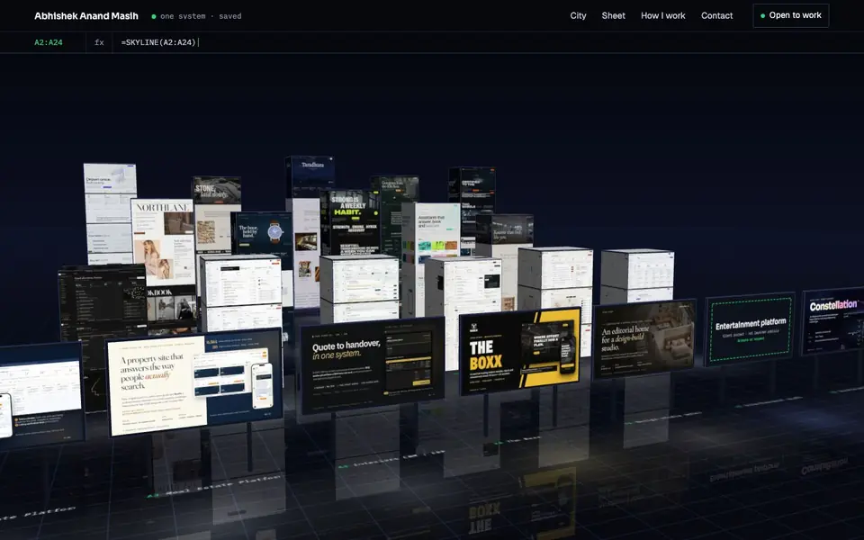

Concept A · a place · WebGL
Sheet to Skyline
The page opens on the spreadsheet every client starts with, his projects scattered across it as cells. Scroll and the cells line up and rise into a night city where every tower is one of his builds and its facade is that build’s own long page. A drone tour flies you from building to building, and the last shot pulls back to show the whole skyline. Hold the mouse down and the city collapses back into the mess. After the city comes a results sheet: what changed for clients after go-live.
- Palette
- Type
- Sora, Geist, IBM Plex Mono
- Motion
- Extrusion and camera travel
- Weight
- 139 KB of 3D, after first paint